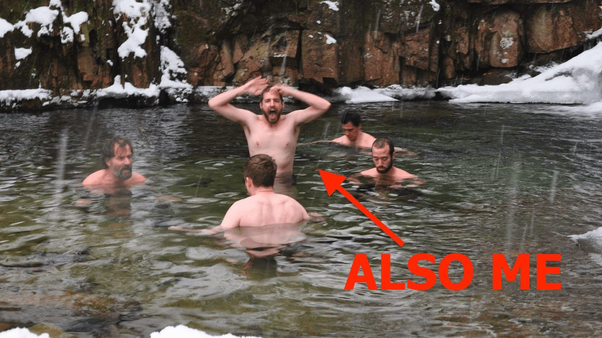

It's hard to believe that I began my journey with Wim Hof 12 years ago next month. I had no idea that my attempt to debunk an eccentric ice-guru in the mountains of Poland would so profoundly change my life. That week at his dilapidated training center ultimately spawned 2 books, stopped me from getting canker sores ever again and gave me tools to tackle depression and anxiety. More than that, it opened me up to a really great community of fellow ice seekers.
But after 12 years of (nearly) daily practice I also have a few thoughts about the overall direction of InnerFire and the official Wim Hof Brand as well as some observations about how some effects of the method seem to trail off after extended practice. So I put together an off-the-cuff video where I only drop a few bombshells.

This is a picture of my very first time dunking in ice water. For those of you who thought that I am the ultimate picture of human composure in the face of extreme cold: think again. Fortunately, I got a lot better with practice